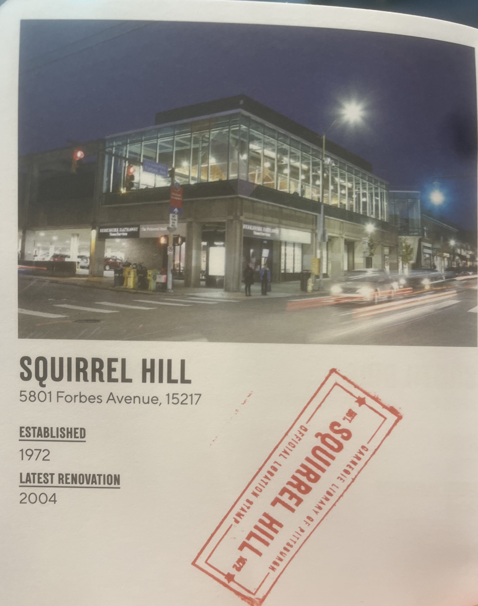
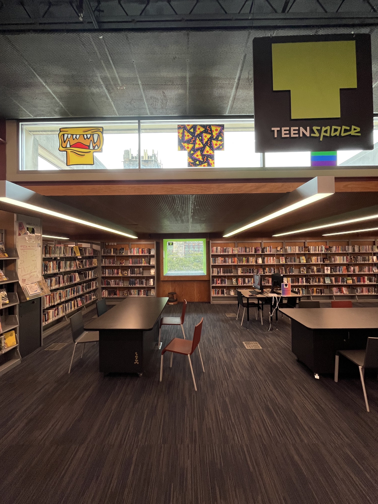
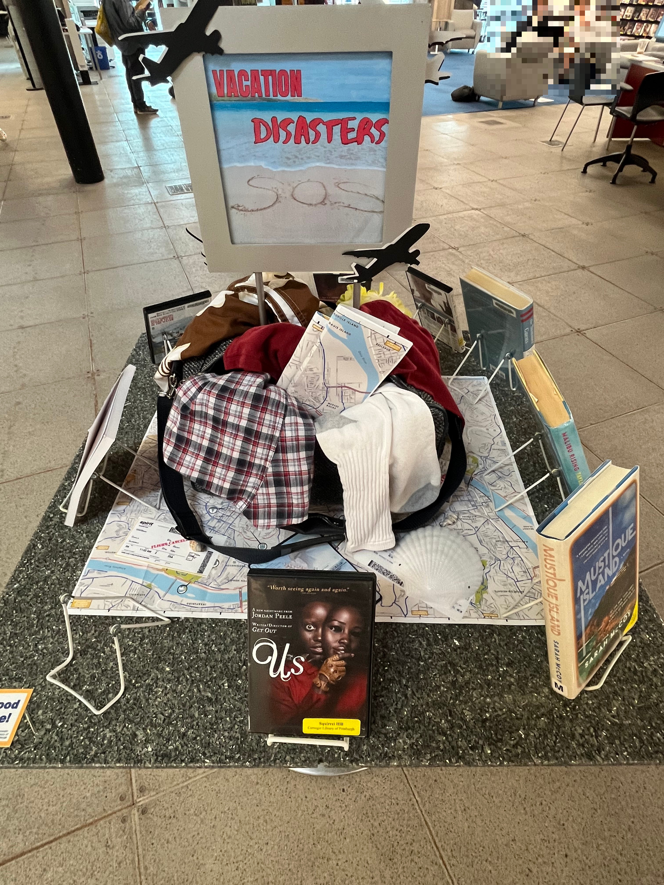
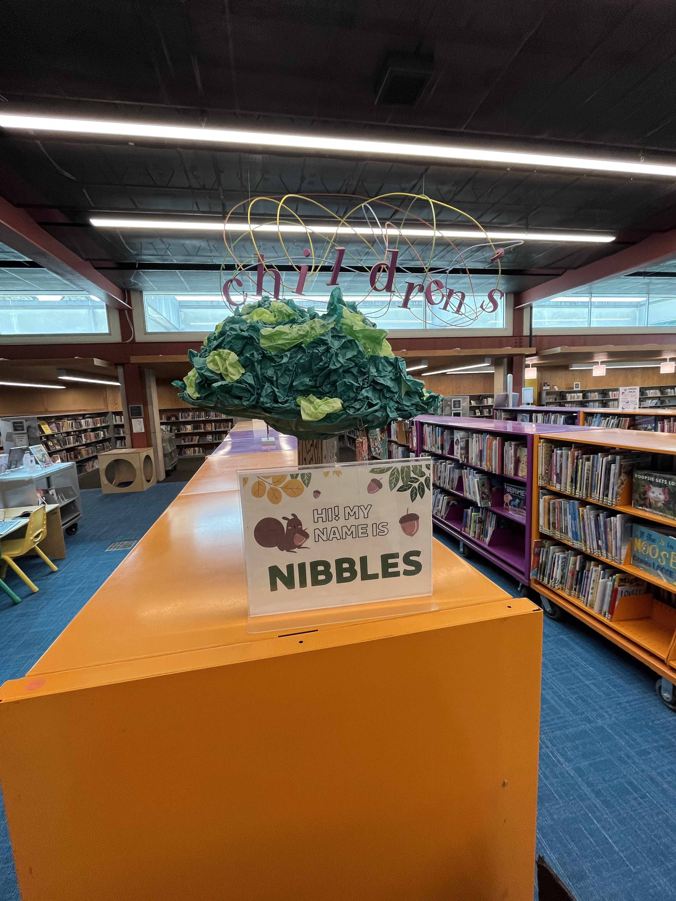

Quick Facts
- Tier: A
- Date Visited: 8/30/2023
- Travel time: TBD (Will measure soon)
Notes
A really fantastic library! It has really great, cozy vibes once you get past the entrance up a bunch of stairs which seems like they might be being rennovated. The building itself is a really great piece of architecture and is a notable landmark on the bus ride from CMU so I never miss my Squirrel Hill stop. The library itself has a great collection of books and multimedia. I really appreciated the little displays they put up for notable books/genres. They had a Teenspace - I dared not step into to preserve its teenage sanctity - which had graphics on the window of my three favorite things from when I was a teenager: a yellow monster, pizza, and queer pride. I hope the teenagers of Squirrel Hill make good use of this place! The children's section was notably cute - I really appreciate them having computers dedicated for kids to use. I'm sure some future CS major will have gotten their start from these computers and the intro programming books nearby. And of course, shoutout to Nibbles to Squirrel.
Picture Gallery
   
Main (Oakland)
Quick Facts
- Tier: S✨
- Date Visited: 8/29/2023
- Travel time: TBD (Will measure soon)
Notes
Where better to start the journey than at the Main Library! (Conviniently also the closest by distance) It has everything you could possibly want in a library: tons of study space, books and other media to checkout galore, a really nice coffee shop (I recommend the chocolate-banana muffin). The building itself is gorgeous - I like to go to the second floor to study. Also, I ran into my friend Sasha when visiting for the first time, so that's a plus! The only downside of this library is that the rooms are very echoey, so it's easy to accidentally be very loud and disturb people when shuffling through a bag, for example. However, it's easily an S-tier library, highly recommended.